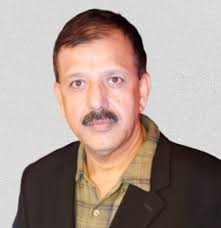
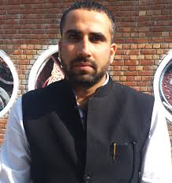

President – IIC NIT KKR
Dean – Research and Consultancy
Prof. R.K. Sharma
Professor, Department of Electronics & Communication Engineering
National Institute of Technology, Kurukshetra

Vice President – IIC NIT KKR
Prof. Dinesh Khanduja
Professor, Department of Mechanical Engineering
National Institute of Technology, Kurukshetra

Convener – IIC NIT KKR
Dr. Rajeev Rathi
Assistant Professor , Mechanical Engineering Department
National Institute of Technology, Kurukshetra
General Secretary – IIC NIT KKR
VACANT